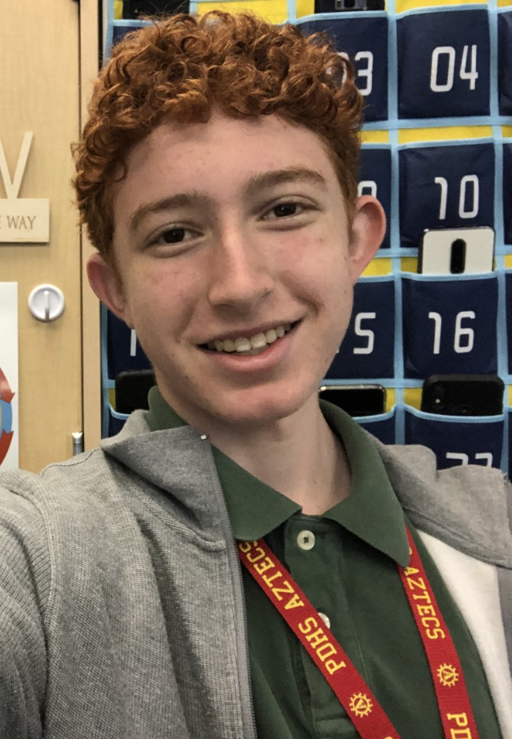

|  |
My career goal is to be in one of the sciences, whether it is
computer science, aeronautical science, or zoological science.
I want to enjoy my job. To achieve this goal, I will go to a four-year
university. I want to go to college because I enjoy learning. I enjoy logical thinking so a
career in science would make sense for me.
I am punctual, resourseful and responsible. These strengths will help me in my career. I have demonstrated these traits in my academics and extracrurriculars. Most of my major accomplishments in High School come from extracurriculars. I am part of our successful marching band. Marching band has taught me how to be individually responsible, and how to work well with a team. I have also been part of a competitive robotics team. In four years we have been 1st place three times, been 2nd once, and have been recognized for Judges' Choice three times. Thank you for reading my About Me page. Please explore the rest of my site. |